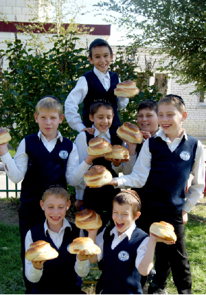

Jewish Revolution in Volgograd
From being a lonely Jewish child, totally ignorant of his Judaism and living among countless Gentile children, Rabbi Zalman Yaffe followed a long journey until he began serving as the Rebbe MH ” M ’ s shliach in Volgograd, Russia. The city that earned its place in history when it halted the Nazi invasion had been virtually gutted of any Jewish presence; only a few Jewish sparks still remained. Rabbi Yaffe and his family came to the city and created a massive Jewish revival. In an interview , Rabbi Yaffe tells his life ’ s story, along with the story of his shlichus and the ever-present Divine Providence .
Translated by Michoel Leib Dobry

The city has an impressive record, and this includes a rich and most vibrant Jewish history. About one hundred and twenty years ago, a large synagogue was built in the center of the city, followed by another one a few years later.
As the years passed, the Jewish population continued to grow, as the local community developed with the building of new mikvaos and the establishment of Torah institutions. The city also had many Chabad Chassidim living there.
However, all this was brought to an end when the Communist Party seized power nearly a century ago, after persistent battles with the White Russian Army under the leadership of General Anton Denikin. Immediately after the Communists conquered the city, party activists and secret police started implementing their cruel decrees. They began by closing the main synagogue, and within a short period of time they had shut down every Jewish institution. With an iron fist, they crushed the city’s magnificent Jewish community, and an atmosphere of heresy soon began to pervade the younger generation.
The city’s main claim to fame stems from its historical role during the Second World War while it was still known as Stalingrad. It was the site of one of the most critically important battles in the conflict between the Soviet Red Army and the German Wehrmacht. Volgograd is known as the city that stopped the Nazi blitzkrieg in its tracks before it reached Moscow. The Germans sent no less than a thousand bombers each day to turn the city into rubble. At least five million residents, including many Jews, were killed in the attacks. All the city’s buildings were reduced to ashes, save for one historic landmark and two others – the buildings that had previously served as the city’s synagogues. To this day, the shuls bear signs of the bombing raids on their outer walls, a silent testimony to what the city endured during those days of terror.
When the war ended, many local residents returned to the city. However, the Communist authorities exercised absolute control and prohibited all religious activities. As a result, there were no public displays of Judaism in the city for many years. Regrettably, most second – and third-generation Jews were subsequently assimilated among the Gentiles.
Throughout these years, there was one family that maintained a secret minyan, albeit with much difficulty, and worked with tremendous self-sacrifice to keep the Jewish flame burning in the city.
The ones who restored the glory of Torah and poured new Jewish life into Volgograd were the shluchim of the Rebbe, Rabbi Zalman Yaffe and his wife, who arrived in the city eighteen years ago. “Within a few days after our arrival, we founded a Chabad House, rented a building for a shul, and got straight to work. It was hard in the beginning, and over the years there were moments when we thought we had reached the level of our endurance. However, we were sustained by the cases of Divine Providence that we saw every step of the way,” Rabbi Yaffe recalled.
In 5763, after investing considerable time and effort, the shliach succeeded in getting the municipal authorities in Volgograd to return the first synagogue to the Jewish community. With the help of some generous monetary contributions, the facility has been expanded, renovated, and transformed once again into a multifaceted Jewish center, more magnificent than it was before the Communist takeover.
Today, the activities at the shul represent one aspect of the extensive outreach work that the shluchim conduct on a regular basis. They run a school, a kindergarten, a mikveh, an active Chabad House, seminars for young people, summer camps, and a series of intensive year-round programs.
Rabbi Yaffe is known as one of the most successful shluchim in Russia, and we asked him to tell us his secret.
“I have to admit that the avoda of shlichus is no easy job. There are many hardships along the way. Not every story has a happy ending, and sometimes our labors need to last more than a day before they begin to bear fruit,” he noted at the start of our interview. “Only recently, I invested a considerable amount of time devoted to one of my community members. We learned and farbrenged together, but I soon discovered that he had returned to his old ways. While I was very frustrated and nearly broken, I wouldn’t let it effect me. We are here on the Rebbe’s shlichus to work and to work hard. If someone goes out on shlichus and tries to count his successes, he might find himself getting frustrated all too quickly.”
AN INTRODUCTION TO G-D
Rabbi Zalman Yaffe was born far from the place of his shlichus, in the city of Ibn Frankov, near Lvov, Ukraine. His family had virtually no connection to Torah and mitzvah observance. “Both of my parents were engineers by profession. The only crumb of Yiddishkait in our home was the presence of the Yiddish language, which they spoke whenever they didn’t want the children to understand them.
“In later years, when I was approaching maturity and developing an interest in my Jewish identity, my father told me about the Beis HaMikdash and Dovid HaMelech. These were the only things he knew about Judaism, and he shared them with me. When I asked to hear more, he didn’t know how to respond.”
The ones who constantly reminded him of his Jewishness were his fellow students. As far as he knows, he was the only Jew in his school. “Racism and anti-Semitism were deeply rooted within the hearts and minds of the Ukrainian people. Even my best friends would make me feel second-class. I always had to make a great effort to prove myself them. However, it was in their merit that my Jewish identity became stronger. I had an intense longing to know what it was about Judaism that made them hate me. Why do they spit at me? Why do I have to suffer? I asked my parents these questions on numerous occasions, but they didn’t seem to know any more than I did.”
When he was drafted into the Soviet Army in 5746, he was classified as an aircraft mechanic. “There were other Jewish soldiers on the base, and we worked together as a team. While we didn’t do any mitzvos, not even observing Yom Kippur or Pesach, we still did everything as a collective unit, part of the DNA of the Jewish People. We helped one another and enjoyed being together. The other soldiers already knew that we were Jews and lived as a unified group.
“During my military service, the world’s most dangerous nuclear accident took place with the explosion at the power plant in Chernobyl. While the Soviet government tried to hide the extent of the catastrophe from its citizens, we knew exactly what had happened there as part of our duties in the army. I remember that the incident aroused great fear throughout the base. No one was certain how much damage had been caused by the nuclear leakage and how far it would spread.”
After he had been released from the army, R’ Zalman joined his parents, who had recently immigrated to faraway Siberia, where they worked as engineers for a major pipeline company.
Around this time, the Bolshevik regime that had controlled the Soviet republics for over seventy years had collapsed, and a spirit of democracy spread throughout the former Communist nations. The gates of the Iron Curtain flung open, and many Jews fulfilled their dream of immigrating to the Holy Land. It was then that he heard from his parents for the first time about their desire to live in Eretz Yisroel, the homeland of the Jewish People.
“Inspired by my parents, I decided to begin the process of making aliya. In order to receive an immigrant visa, I had to present documentation proving that I was Jewish. I returned to the city of my birth, and I started learning there in a Hebrew ulpan sponsored by the Jewish Agency. The teacher was Chabad Chassid Rabbi Moshe Kalatnik. In addition to the Hebrew studies, he instilled within us a sense of Jewish pride, speaking about the values and meaning of belonging to the Jewish People.”
The rabbi’s words captivated him, and Rabbi Yaffe described the feeling as that of cool water for a tired soul. “He succeeded in kindling the pintele yid within me. I felt that this was the first time that someone had revealed to me the precious secret of my heritage. Among the younger generation of Jews, there was a tremendous spiritual awakening after years of repression, like a dam bursting open. For the first time in my life, I heard about who I really was, about my true essence as a Jew, something that I had been searching for most of my life. Rabbi Kalatnik would host us in his home, where we would read and learn together out of old s’farim, naturally on Jewish themes, and our souls were revived.
“It wasn’t long before I became a baal t’shuva and connected with my inner world. When I felt that I had ripened sufficiently, I consulted with Rabbi Kalatnik and asked him to recommend a good yeshiva where I could learn Torah. He gave me two options – the Chabad yeshiva that had recently opened in Kiev or the yeshiva established by the shluchim in Moscow. I chose the latter option and flew to Moscow. I came in to the Marina Roscha Synagogue and got right to work on my Torah studies.”
As Rabbi Yaffe recalls those days, he describes them as “the most beautiful period of my life.” His days were filled with the study of Torah and the strengthening of his soul. “With every passing day in the yeshiva, my enthusiasm grew and intensified. The rosh yeshiva was Rabbi Uri Kamishov, and the mashpia was Rabbi Dovid Karpov. They regularly received the assistance of young shluchim who had come from Beis Chayeinu, charismatic, chassidishe bachurim. I also became acquainted with Rabbi Yitzchak Kogan, and I saw that Chassidim were special people representing the ultimate truth, and I wanted to be like them.”
After spending a year in the yeshiva, the decision was made to immigrate to Eretz Yisroel and continue his Torah studies there. Rabbi Berel Lazar, who was then beginning his own shlichus in Russia, suggested that he enroll in Yeshivas Chassidei Chabad in the Holy City of Tzfas. “As soon as my plane landed at the airport, I boarded a bus and headed straight for Tzfas. It stands to reason that while the yeshiva in Moscow provided the foundation for my Judaism, the yeshiva in Tzfas and its understanding staff transformed me into a Chassid. In addition, I also found a group of Chassidim in the local Chabad community who had arrived in earlier immigrant waves from the Soviet Union. They welcomed me with open arms. Among the more influential members of this group were Rabbi Dovid Aharon Notik and Rabbi Shlomo Raskin. I often spent Shabbos with them, and I felt that their home was my home.”
In Tishrei 5753, after two years of learning in the Tzfas yeshiva, he traveled for the first time with his friends to Beis Chayeinu. “I received a fair dosage of pushing and shoving, but when I saw the Rebbe for the first time during the High Holiday season, I felt as if I was looking at an angel of G-d. There was a tremendous physical sensation that consumed my entire being. To this day, I have no explanation for it. At that very moment, I felt that I had become connected to the Rebbe with every fiber in my body.”
When he returned to Tzfas from 770, he concluded his studies for certification as a shochet for both poultry and livestock. He worked for a while at a slaughterhouse in Kiryat Shmoneh until he received a phone call from Rabbi Kogan, asking him to return to Moscow and help him with the sh’chita there. While in Moscow, he met his future wife, and shortly thereafter they were married in Eretz HaKodesh. They established their place of residence in Tzfas, but not for long. The telephone rang again, and this time it was Rabbi Berel Lazar, suggesting that they forego their pleasant lives in Tzfas and go out on shlichus. “After receiving the Rebbe’s bracha, we returned to Russia and arrived in Volgograd in 5756.”
STANDING NEAR THE PEELING WALL AND REQUESTING
WITH ALL HIS HEART
More than a million people live in Volgograd today, including about five thousand Jews, Rabbi Yaffe estimates. “In relation to other large cities in Russia, we’re talking about a very small Jewish population.”
Before the Yaffes landed in Volgograd with all their belongings, R’ Zalman came on his own to familiarize himself with the location. When he arrived in the city, he found fifteen middle-aged Jews who met together from time to time and recalled the days of a once flourishing community.
“They got together for prayer services once a month on Rosh Chodesh. The minyan was organized by a man named Dovid Kolital, and he kept the embers of Judaism glowing as best he could. As part of the prayer services, they would say Kaddish in memory of those Jews whose yahrtzait fell out during the month. Since the synagogue had been taken over by the Communist authorities, the minyan took place in a room set aside by the local branch of the Jewish Agency. Dovid Kolital served as the baal koreh, chazan, and Chevra Kadisha; he essentially did it all.”
The younger crowd didn’t participate in any of the Jewish activities, a clear sign of the community’s decline. However, the shliach’s arrival changed all that completely. “When I met with R’ Dovid, I explained to him the reason why we had come and our plans to bolster the Jewish community. As I finished my explanation, he got up and proceeded to hug and kiss me. He had been praying for some young blood to breathe new life into the next generation, and he promised to help me in whatever way he could. A week later, my wife and two children joined me.”
The initial days on shlichus are well known for their humble beginnings. However, what kept this family from breaking down and maintaining their activities at full force were the numerous cases of Divine Providence they experienced at every turn. “Some of the community members secured a place for us to live prior to our arrival. However, it was a totally rundown apartment with only two rooms that were damp, moldy, and malodorous, and all the walls were cracked and unstable. In short, the place was simply unfit to live in, and most certainly not for shluchim seeking to host a house full of guests. Finally, when our young daughter was sitting under the bathroom sink, and it unexpectedly came loose and nearly fell on her head, we realized that we had to find a normal place to live immediately.”
Just a week after their arrival, the shluchim were looking for a new home. “I took the telephone numbers of several real estate agents, and I immediately asked each of them to find a suitable apartment according to our basic requirements. They all promised to get back to me, and I was certain that I would receive a flood of phone calls. Unfortunately, I ended up waiting for nothing. No one called back. When we saw that the house search was going nowhere, we decided instead to focus on looking for a proper facility for Chabad House activities.
“We went out with the realtors to see some buildings, but nothing seemed appropriate. We later realized that the main stumbling block confronting us was the fact that most of the city’s residents were sworn Communists. Even after the collapse of the U.S.S.R., the Communist Party still received ninety percent of the vote from Volgograd citizens. None of them wanted to see a resurgence of religious activities taking place in their buildings, especially not Jewish activities.”
After three weeks of intensive searching without success, Rabbi Yaffe felt very discouraged. He even began to consider abandoning the shlichus. What are we doing here? he asked himself. Perhaps we would have better success in another city, he thought. We’ve been in the city now for nearly a month, living in a dilapidated apartment, and without a proper place to hold our activities. “I stood before the peeling wall in the house and cried from the depths of my heart, ‘Alm-ghty G-d, I’m in this city on the shlichus of Your faithful servant, the Rebbe, and I came here of my own free will. Please help us to organize things and get to work.
“I had no idea how fast G-d would hear my prayers. The very next day, a Jewish man approached me and said he wanted to speak with me. He wanted me to know how good he felt when he saw a Jew walking through the street, and he asked what he could do to help me. I told him about my search for a residential apartment and a facility for Chabad activities. He said that he had a Gentile friend with a building that had been available for rent for some time, and we went together to see him. When I went into the building and saw that it wasn’t suitable for our purposes, I recalled another friend who also had a building for rent. We went to check the second place, and we discovered to my amazement that it was exactly what I was looking for. It had an event hall, separate entrances for men and women, a kitchen, and offices; the price was ridiculously low. For a brief moment, I hesitated about signing the contract, worried that there might be some hidden problems. While I was concerned over a possible case of fraud, my wife, an attorney by profession, checked the building from top to bottom and found everything in proper order. We signed the contract that night.
“I returned home very happy. Things were finally starting to jell. Now, we had to resume our search for a place to live for our family. I began to retrace the success of the previous day. I stood before that same wall of peeling paint and spoke to G-d. I thanked Him for the activities facility, and now I asked for His special assistance in finding a residential apartment. The next morning, I was awakened by the ringing of my telephone. There was a realtor on the line, and he asked if I was still looking for an apartment. When I said yes, he replied that he had found a good place for us, and we went together to check it out.
“I came to a large apartment, the type that could enable us to host numerous guests. Furthermore, it was going at a price far less than the previous offers. We signed a contract that same evening, and within a few days, we had moved into our new home located just a few minutes away from the Chabad House. The Divine Providence was crystal clear!”
GATHERING THEM,
ONE BY ONE
The work during those first few years was very difficult and exasperating. “We had to gather the local Jews, one by one. There was no sense of Jewish awareness, and we had to create it from scratch.
“I remember a story that took place during that period. The telephone rang in my home, and I answered, ‘Rabbi Zalman, Shalom.’ There was total silence on the line. After a few seconds, a woman’s voice asked, ‘You’re a rabbi?’ I said yes, and she replied that she was actually calling her friend, but she had apparently dialed the wrong number. I took the opportunity to ask her if she was Jewish, and she said that she was. We set a time to meet, and she and her family have been among our core supporters ever since.”
One story follows another, and Rabbi Yaffe recalled yet another that took place during the early days of his shlichus.
“A journalist for one of the local newspapers had arrived for a scheduled interview regarding a certain law that had just been passed by the city government. She wanted to know what the Jewish community thought of the new legislation. She had been looking for Jews in the city, and she finally came to me. When she had finished the interview, I felt the need to ask her about her religious background, and she replied that she knew that her mother was Jewish. I proceeded to tell her about our activities, and this reporter also became an integral part of the renewed Jewish community. She eventually introduced me to another family, a Jewish couple with a daughter, and they have helped us out a great deal too.”
The following summer, the shluchim succeeded in organizing a Jewish seminar outside the city for twelve Jewish families. Similarly, the shluchim organized a camp for Jewish boys and girls. “At the conclusion of the summer camp, we invited the mohel, Rabbi Yeshaya Shafit, from Moscow to perform a circumcision on five boys. During our first year in operation, forty-five Jews underwent circumcision, while thirty-five couples have married in accordance with the law of Moshe and Yisroel.”
After Chabad activities had been well established and the circle of supporters continued to grow, the time had come to open a Jewish school. “Rabbi Lazar strongly urged me to advance this initiative. I was still a young man at the time, and I didn’t know enough about the tremendous investment and resources required to found a school. Nevertheless, I had faith in the power of Divine Providence, and I slid into the driver’s seat with an attitude of ‘L’chat’chilla Aribber.’ We felt that the Rebbe was accompanying us every step of the way. We quickly found a highly professional educator to serve as principal according to the spirit of Chassidus, and by Divine Providence, we located a large and spacious facility surrounded by trees and foliage. We began running a Jewish school, later adding a kindergarten as well. To this day, everything has been operating superbly and we have achieved much success.”
THE POLICE ARRIVED
A MOMENT LATER…
When I asked to hear some more stories from his shlichus, Rabbi Yaffe replied by emphasizing that his shlichus is no story. “This shlichus involves a lot of hard work every day,” he immediately pointed out. However, he eventually did consent to relate a few interesting occurrences.
“A few years ago, I was returning via train from Moscow, where I had been staying with a group of students from Volgograd who had gone there for a seminar on Judaism. Russian policemen had a number of ways of getting money out of people. One method was to check to see if someone was missing any documents, and then the person would either pay the policeman a bribe or be sent to jail. As luck would have it, two police officers boarded our train. They apparently thought that I was a wealthy man and dealt with me accordingly. After they asked me to show them my passport, they claimed that one page was missing a signature. They alluded to something, but when I claimed that I didn’t understand what they meant, they informed me that they would report me to the authorities and take me off at the next stop for immediate imprisonment.
“When I realized what their intention was, I quickly placed a mobile call to certain high-ranking officials in Volgograd, who came to our assistance and even got the KGB involved. A few minutes later, the two policemen came back and apologized for taking my passport. They claimed that they actually wanted to return it to me, but since the matter had already reached the higher echelon, they had to go with me to the Volgograd police station, where I would taken in for questioning. While I was happy to hear that I wouldn’t have to get off at the next station, I was distressed by this ending to a most successful seminar on Yiddishkait. I wasn’t expecting this at all.
“When we arrived in Volgograd, several policemen were already waiting for me at the platform. They gave me back my passport, and after a short ride, I was brought into the office of the deputy station commander. He started asking me some questions for the protocol, such as who I was and what I was doing in the city. I told him about the shul that had been returned to us by the municipal authorities and the activities we were conducting there, the kindergartens and day school we had established, and the seminar on Judaism we had just held in Moscow. As I was speaking, this tough police officer, whom I was meeting for the first time, was beginning to shed tears. I was both stunned and confused. After he calmed down a bit, he told me that he was Jewish. Naturally, I added his name to my growing list of contacts, and we were regularly in touch with one another. Not long afterwards, he passed away at a relatively young age. When I heard the news, I thought to myself that this was an amazing case of Divine Providence. If I hadn’t made that unnecessary stop at the police station, I never would have found him. Now, his soul had returned to its Maker, after he had been introduced to his Jewish roots and began fulfilling mitzvos.”
Rabbi Yaffe had another story that made waves throughout the city when it happened.
“I don’t know how this happened after so many years of oppression, but the faith of many people in our community is simply amazing. They love to read T’hillim in Rostov at the Rebbe Rashab’s gravesite, which is six hours away from Volgograd. I always ask myself where this pure devotion comes from. While these people were not educated to have such emuna, this next story that took place in the merit of davening at the Tziyon of the Rebbe Rashab caused many Jews from Volgograd to make the trip themselves.
“Our community leader owned three gambling casinos, which were completely legal business establishments prior to the election of Dmitri Medvedev to the presidency of the Russian Federation. Immediately after his election, the new president announced that he would make gambling illegal, but many people in Russia simply didn’t believe his declarations. In any event, one fine day, I received a telephone call from our community leader, asking if he could travel together with me to the Tziyon of the Rebbe Rashab in Rostov. I agreed, and we set out on our long journey. During the trip, I noticed that he had an unusually dejected look on his face, and I asked him what he was so worried about.
“He told me that he hadn’t slept for a week because his businesses had been losing a great deal of money every day – about three hundred thousand dollars – and [Russian] President Medvedev was about to close them down. As a result, he wanted to make this trip to the Rebbe Rashab in Rostov and request his blessing. The journey took place on a Thursday evening. He arrived in Rostov, recited the Maane Lashon and said T’hillim at the gravesite in a flood of tears, and eventually we headed back home.
“When I met him again on the following Monday, he had a look of sheer joy on his face. ‘What happened?’ I asked in bewilderment. ‘I just heard that Medvedev has implemented the executive order imposing a ban on gambling operations.’
“He smiled and related the following. It turned out that the same evening that he had returned from Rostov, a local Gentile had called him to ask if he could buy his businesses. Apparently, the Gentile didn’t believe that the president would carry out his declared policy, and he made an offer to purchase the casinos cheaply. However, our community leader was a very shrewd businessman. He told this non-Jew that there were other potential buyers, and this eventually raised the price to something that made the transaction worthwhile for the current owner. The purchase money covered all his outstanding debts and also enabled him to invest in new business interests.
“Immediately after the signing of the contract and the money changed hands, policemen came knocking at his door to demand that he close his business as mandated by executive order. However, he informed them that the business had a new owner and they had to speak to him…
“This story spread throughout the city and left a powerful impression. If we had previously traveled each Rosh Chodesh to the Rebbe Rashab’s Tziyon by car, today we need to order buses.”
How you do deal with the high level of assimilation, a plague that confronts every shliach in the countries of the former Soviet Union?
Yes, we have a community in which many Jews have intermarried. It’s very difficult to convince a Jew with a family to leave his or her non-Jewish spouse. Therefore, our main activities concentrate on preventive methods for the next generation. We hold annual seminars for young people, and a considerable portion of the lectures and activities focus on the importance of Jews only marrying other Jews.
You are the only Torah-observant Jewish family in the city. How does this effect your children’s education? How do you manage to give them a proper Chassidic education?
The subject of education is one of the most difficult issues, not just for the shluchim in Russia, but for the shluchim in every other city and country far from Chabad centers. When I speak with my wife about this, she says that we have to rely upon the Rebbe, and this is exactly what we do.
Our older daughter has already begun learning at Machon Chaya Mushka in Moscow, and the physical distance is very difficult both for us and for her. The other children are together with us, and they are part of the shlichus.
The Rebbe repeatedly says that the world is ready for the Redemption. To what extent can you see this in your activities?
We try to include the message of Moshiach in every lecture. There are those who ask questions in search of deeper answers on the issue, and then we get into more detailed explanations. People tend to accept them rather well. In general, they understand that without the Rebbe, we wouldn’t have come to this city. In fact, they realize that all the activities we do are on the shlichus of Melech HaMoshiach.
As to your question regarding the extent that it permeates our activities, I’ll tell you something that will illustrate this point. On a recent Sunday, I traveled to the Rebbe Rashab’s Tziyon in Rostov with one of our supporters. In the middle of our journey, he suddenly turned to me and said, “We’ve traveled several times to Rostov; what about a trip to 770?”
His words simply amazed me. I was not expecting him to say anything like this. I tried to determine how serious his declaration really was. “You want to see New York?” I questioned.
He raised his eyebrows and said, “If there’s one country that I’d really like to see, it’s Australia. When I come to New York, it’s only for the Rebbe…”
EVERYTHING BUILT WITH GREAT MAGNIFICENCE
When we asked Rabbi Yaffe to conclude the interview with a report on his future plans, he explained that with regard to the Chabad institutions, everything is already fully established. As a result, his main interest now is to reach every Jew in Volgograd and widen the circle of Chabad friends and supporters.
Rabbi Yaffe asked if he could conclude the interview with an expression of thanks to all those who have stood by his side – “to the shluchim of Russia and the outstanding Jewish philanthropists, R’ Levi Leveiv and Nadiv Mirilashvili, for their tremendous assistance via the Ohr Avner Foundation.
“Similarly, I wish to give a big thanks to the Rebbe’s shliach, the chief rabbi of the Russian Federation, Rabbi Berel Lazar, who helped me a great deal with his wisdom and his unique grace, always available to answer any questions and offer advice, regardless of the issue.”
Nosson Avrohom. "Jewish Revolution in Volgograd." Beis Moshiach, no. 896 (October 2, 2013).